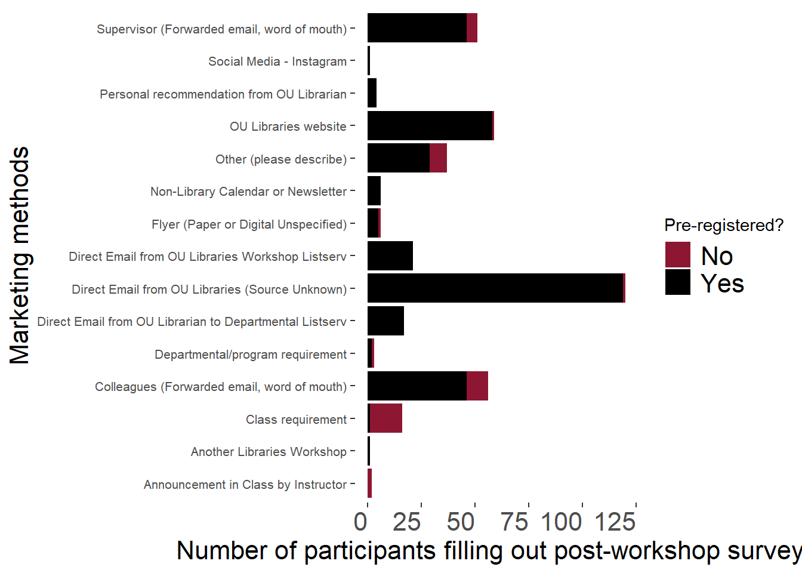
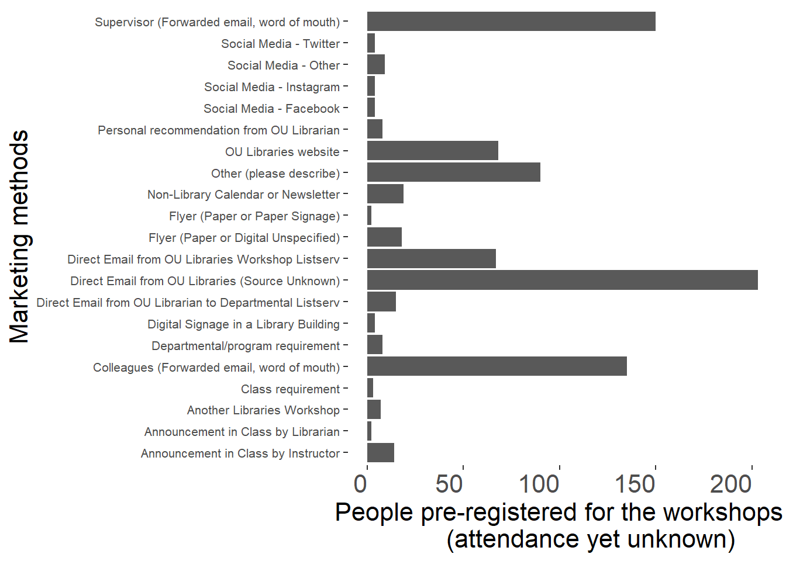

2 Marketing
2.1 Executive summary
Our overall most effective marketing methods are emails, the OU Libraries website, word-of-mouth, and outreach to instructors.
This determination is made by combining what methods bring in high attendee counts (1) and what methods bring the highest ratio of attendance to registration (2).
The top three marketing methods that bring in the highest counts of attendees who fill out our post-workshop surveys (hereafter, “attendees” and “attendance”) are emails, word-of-mouth, and the OU Libraries website
The marketing methods with the highest response “intensities” (relative proportion of attendees) were class requirements (making liaison outreach to instructors critical), librarians emailing a departmental listserv directly (we have these permissions for at least two STEM departments to my knowledge), and the OU Libraries website.
2.2 Absolute effectiveness (counts of attendees) by marketing method
2.2.1 Overall counts of attendees by marketing method and registration status
These data for people who filled out a post-workshop survey (ie are confirmed to have attended a workshop) and answer the question “How did you hear about this workshop?”. They are grouped by pre-registered or not pre-registered (passerby walk-ins, class workshops where registration wasn’t required). We do not get 100% completion of surveys.
2.2.2 Marketing methods for selection “Other (please describe)” with at least two words
These words suggest that professors, librarians, and previous workshops were included in methods that reached these attendees. Later data cleaning to incorporate emails/professors/word-of-mouth into the existing categories could be useful.
2.3 Marketing sources for people who registered for workshops (attendance yet unknown)
These data are from people who filled out the pre-registration form to attend a workshop. When they filled out this form, we do not know if they will go on to actually attend the workshop. Most of the people in the previous section will have registered, so there is overlap between the datasets, but the post-workshop surveys are anonymous so we cannot connect them directly. The next section shows a broad-level view of the relative effectiveness of methods for people who register vs people who follow through and attend.

2.4 Relative effectiveness in marketing methods
We do not get 100% survey responses at our workshops. However, I wanted to see to see if some marketing methods are proportionately more effective in getting pre-registrants to actually show up at the workshop. The differences are overall statistically significantly different (Chi-squared = 204.31, df = 21, p < 0.0001).
Below is a chart that represents this visually as a ratio of attendance to pre-registrant counts. The vertical beige bar shows approximately where about the same proportion (i.e., 0.5 out of 1, or 50/100) of people who pre-registered (red) ended up actually attending and filling out a survey (black).
Class requirements, direct emails from OU Libraries, personal recommendations from a librarian, and announcement in class are among the differentially effective ways to get people to attend vs register.
A completely red bar indicates that none of the people who completed the pre-registration survey later completed a post-workshop survey. It is possible some of those attendees showed up but did not complete the offered post-workshop survey. People who pre-registered and heard about the workshop via Twitter (no longer used), Facebook (no longer used), Other Social Media Not Specified (no longer used), and paper fliers have this result, suggesting those media may not be resulting in attendees or not resulting in attendees willing to provide feedback.
A completely black bar indicates that pre-registration did not occur but people attended anyways (you see these attendees as the red caps to the black bars in the previous section). This occurred more with people who attended a workshop given in a class (“Class Requirement”; that category suggests either we visited the class, which does not involve LibCal registration, or that the instructor asked people to attend a workshop outside of class). With online workshops requiring pre-registration, we don’t necessarily expect any bar to be completely black (all walk-ins). However, in-person workshops can accept passer-by walk-ins who didn’t pre-register or people who saw the event via any other marketing method (again, see the previous section’s chart) and just showed up without pre-registering. This rarely occurs anymore. Zoom workshops could have other registrants also forward the Zoom link.
Thus, any method with some black has some attendance, and methods with larger amounts of black indicate relatively stronger responses. Thus, the highest response “intensity” are for class requirements and direct communication.
2.5 Marketing implementation details
2.5.1 Email detail level and timing
This subset study was conducted by B. Narr and Claire Curry in 2023 and has not been re-done.
I used registrants instead of confirmed attendees, because that felt more relevant to the emails, and it was more consistently documented. The factors that were considered here were lead time (how much time between the email and the event) and length of email (long = one that was typed by one of you, short = automated libzoom email). Email length was the deciding factor for number of registrants!
Thus, the time between registration opening and workshop did not affect attendance. As such, CMC proposed we open all workshops at the start of the semester. This change was approved by the committee in slack in Fall 2023 (2023/10/03) to be implemented for the Spring 2024 workshops. We discussed adding a second reminder for already registered participants, but only one reminder is possible using LibCal automated emails. We will now post once advertising the full schedule, and then continue doing the 3-weeks-advertising to remind people again.